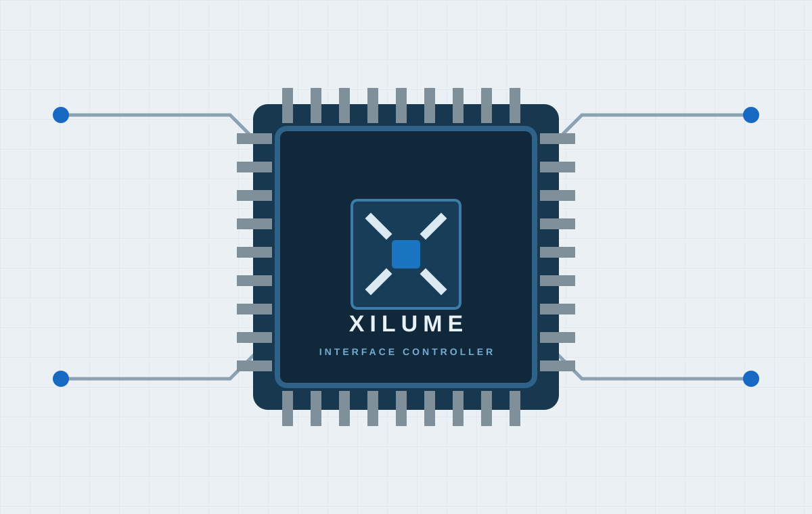

Shorter integration path
Begin with a defined interface function rather than an empty firmware project and a collection of unrelated drivers.

ENGINEERING CONTROLLER FAMILY
Xilume controller ICs are designed to connect a USB host to CAN FD, RS-485, or Smart Battery interfaces. Start from a controlled function instead of rebuilding the same communication layer for every product.
Preliminary engineering family · not yet released or for sale · final limits follow released datasheets

WHY IT MATTERS
Begin with a defined interface function rather than an empty firmware project and a collection of unrelated drivers.
Each future released model is intended to keep its pinout, host protocol, reference schematic, software, and revision record tied together.
Select external transceivers, isolation, termination, connectors, and protection for the actual environment.
DESIGN FLOW
Physical-layer transceivers and bus-side protection remain on the customer PCB.
ENGINEERING MODELS
WHERE IT FITS
Bridge the host system to CAN FD and RS-485 devices while keeping the controller behavior consistent.
Add selected field interfaces to a custom PCB without starting the complete host protocol from zero.
Build repeatable adapters and validation fixtures around one documented controller target.
Connect supported battery data to a host through a defined USB-to-SMBus controller path.
PLANNED DESIGN RESOURCES
START A DESIGN